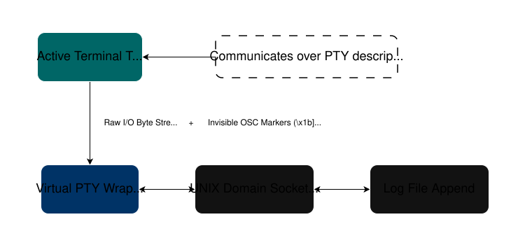

The Main Motivation
Every developer has been there: you spend hours debugging a complex environment issue, running dozens of commands, piping outputs, and editing config files. Finally, it works. But thirty minutes later, you realize you forgot to log your terminal session, and the precise sequence of steps you took is now lost in a messy shell history full of typos and missing command outputs.
To solve this, I built TermLog. It is a lightweight command-line utility written in Go for macOS and Linux. It runs your shell inside a virtualized terminal layer to intercept, sanitize, and save your terminal workflows into individual log files across multiple terminal windows or tabs simultaneously without changing your terminal's layout or behavior.
The Core Philosophy
Existing solutions for terminal logging generally fall into two camps: the heavy-handed Unix script utility (which captures every single raw character, backspace, and cursor move, making the raw output full of messy terminal noise), or shell history files (which only log the command itself, omitting what the command actually printed).
TermLog is built around a simple approach: capture the context, discard the noise.
It captures exactly what ran and what was output by monitoring your shell at the system level. It splits your tabs into separate logs automatically without requiring you to manage environment variables manually or run background scraping loops.
Implemented Features
| Command | Usage | Description |
|---|---|---|
| Log Below | termlog below [file] |
Starts recording terminal activity forward from this exact prompt. |
| Log Snapshot | termlog above [file] |
Captures a static export of the existing terminal scrollback history up to this point. |
| Live Tracking | termlog live [file] |
Saves current window scrollback history, then streams future activity live. |
| Pause Logging | termlog offline |
Temporarily pauses recording while keeping your sub-shell open. |
| Resume Logging | termlog online |
Resumes live recording appends cleanly. |
| Session Status | termlog status |
Displays active mode, state (online/offline), target log file, and runtime. |
| Timeline Divider | termlog mark [label] |
Echoes and logs a visual divider line (=======) to organize parts of your session. |
| Stop Engine | termlog quit |
Terminates the background PTY logging process and exits the sub-shell. |
| Help Menu | termlog help |
Displays a crisp, in-terminal documentation page. |
Core Architecture & Under the Hood
Instead of scraping window text with interval timers or background scripts, TermLog uses an event-driven, hybrid architecture that combines low-level PTY virtualization with native shell lifecycle hooks.

1. Pseudo-Terminal (PTY) Virtualization
When you execute termlog below or termlog live, the tool look up your default interactive login shell (like /bin/zsh) and spawns it inside a virtualized Pseudo-Terminal container (github.com/creack/pty). This acts as a thin data pass-through layer directly between your shell process and your native terminal window app. Because it passes raw bytes bidirectionally, interactive applications (vim, nano, top), terminal resizing signals (SIGWINCH), and ANSI color formats continue to work normally.
2. In-Band OSC Marker Boundaries
To know exactly where a command begins and ends without guessing, TermLog injects standard preexec and precmd hooks into your shell configuration. Every time a command is executed, these hooks print invisible Operating System Command (OSC) marker sequences (\x1b]133;C\x07 to start and \x1b]133;D\x07 to end) straight into the terminal output stream.
Because both the commands and their outputs travel down the exact same ordered PTY pipeline, TermLog reads these markers to split your logs with zero risk of missing data bytes or running into timing race conditions.
3. Localized UNIX Domain Socket IPC
To manage active sessions, TermLog hosts a local JSON IPC service over a local UNIX domain socket stored at ~/.termlog/sockets/. When you run commands like termlog status, termlog offline, or termlog mark from an active terminal tab, the client sends a fast JSON request over the socket to talk directly with the background PTY tracking daemon managing that specific shell instance.
4. Deterministic Tab Isolation
To handle multi-tab environments, TermLog reads your active terminal device path using the system tty binary. It processes this path into a short, filesystem-safe SHA-1 hash key (e.g., matching /dev/ttys003 to a distinct session ID). This key maps the correct socket, configuration file, and log file destinations to that individual tab, meaning you can run dozens of concurrent logs across different tabs without data crossing over.
Security & Safe-Tracking Guardrails
- Zero Password Exposure: TermLog logs data by capturing the generated command output streams passing through the PTY layer. Secure prompt inputs—such as typing your password for
sudoor an SSH authentication field—explicitly suppress character echoes in the terminal. Because those characters are never printed to the output pipeline, sensitive password strings never reach your log files. - Interactive App Layout Masking: Fullscreen alternate-screen applications like
vim,nano, ortopmanipulate text blocks on a separate terminal layer. TermLog's stream processor recognizes when these states are open and drops text logging changes for them, automatically picking back up the moment you close the application and return to the main shell timeline.
Pros & Cons
Pros
- Zero System Dependencies: Written entirely in Go. It compiles down into a single, self-contained binary file with no external libraries or package runtimes required.
- Clean Text Logs: An internal sanitization module strips out raw ANSI escape colors, navigation artifacts (like arrow key strings), and excessive trailing spacing lines.
- Low System Overhead: Because boundary marking is driven strictly by shell events and markers inside the PTY stream, there are no constant background polling loops consuming your CPU cycles.
- Automatic Ghost Socket Cleanup: If a terminal tab crashes or an execution path closes uncleanly, the tool detects the dead file asset on your next run, clears it out defensively, and gracefully returns a standard user warning.
Cons
- Initial Setup Step: Requires a one-time profile installation (
termlog install) to place the necessary hook scripts inside your shell initialization profiles. - macOS Dependency for Snapshots: While live PTY recording works across both macOS and Linux environments, capturing historical scrollback text via
aboveorliverelies on macOS-specific AppleScript/JXA frameworks.
Troubleshooting & Constraints
1. macOS Automation Requirements
Because the snapshot capture commands (above and live) query historical text blocks via AppleScript/JXA, macOS requires an explicit system authorization step. The first time you execute a snapshot command, macOS will prompt you with a dialog box requesting Automation Permissions. You must click OK to allow history gathering.
2. AppleScript View-Port Limits inside iTerm2
Due to native configuration boundaries inside iTerm2's automation layout, calling the .text() property will only return text strings fitting inside your current visible window canvas layout box at that exact millisecond. Deep-buffer historical scrollback recovery requires iTerm2's custom Python API, which will be evaluated in a later update.
Installation & Setup
Step 1: Install the Binary
Option A: Homebrew Tap (Recommended)
brew tap akwastaken/tap
brew install termlog
Option B: Compile From Source
# Clone the repository workspace
git clone https://github.com/akwastaken/termlog.git
cd termlog
# Install Go (if you haven't already)
brew install go
# Compile the production binary
go build -ldflags="-s -w" -o termlog main.go
# Install the binary into your path
chmod +x termlog
sudo mv termlog /usr/local/bin/
Step 2: Install Zsh Integration Hooks
To allow TermLog to pass tracking markers through the PTY stream, add the Zsh hooks to your configuration profile:
# Append the integration block to your config profile automatically
termlog install
# Source your profile to activate the hooks in your current tab
source ~/.zshrc
If you ever compile manual binaries outside of Homebrew, macOS Gatekeeper might flag it as unsigned. You can strip the isolation attributes manually by running:
sudo xattr -dr com.apple.quarantine /usr/local/bin/termlog
Uninstallation
Step 1: Quit the program
termlog quit
# Force-quit any lingering background instances silently
killall termlog 2>/dev/null || true
Step 2: Remove the binary
If you used Homebrew:
brew uninstall termlog
brew untap akwastaken/tap
If you compiled from source:
sudo rm -f /usr/local/bin/termlog
Step 3: Remove files and metadata
rm -rf ~/.termlog
Step 4: Clean up your configuration profile
Open your ~/.zshrc profile file and remove the following integration lines at the bottom:
# >>> termlog integration >>>
[ -f "~/.termlog/termlog.zsh" ] && source "~/.termlog/termlog.zsh"
# <<< termlog integration <<<
Step 5: Refresh your terminal windows
source ~/.zshrc